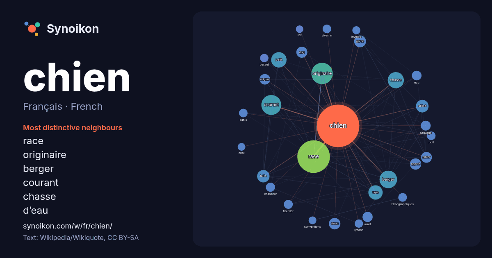

Français · French · popular word
chien
“dog” · The words found around it in 1521 instances from French Wikipedia, Wikiquote.

Most distinctive neighbours
- race 169×
- originaire 62×
- berger 61×
- courant 53×
- chasse 42×
- d’eau 29×
- dog 26×
- gibier 25×
- taille 21×
- garde 20×
- arrêt 20×
- petit 18×
- sauvage 18×
- bouvier 18×
- viverrin 17×
- filmographiques 17×
- canis 17×
- eau 16×
- lycaon 16×
- basset 16×
× = how many times more often than in general French Wikipedia text.
Most frequent neighbours
- race 228
- originaire 98
- courant 85
- berger 66
- chasse 56
- petit 51
- type 44
- groupe 35
- utilisé 34
- taille 33
- garde 30
- d’eau 28
- nom 28
- appelé 27
- film 27
- dog 26
- gibier 25
- origine 24
- compagnie 23
- arrêt 22
In context
- homonymes, voir Chien (homonymie). Canis familiaris Quelques utilisations du Chien. En haut : un chien de grande course ; à gauche : un chien militaire ; Wikipedia snippets · Chien
- Saint-Hubert. Le chien de Saint-Hubert, bloodhound (en anglais) ou bloedhond (en néerlandais) (« chien de sang ») est une race de chien de chasse originaire Wikipedia snippets · Chien de Saint-Hubert
- Chien de fusil Pour les articles homonymes, voir Chien (homonymie). Le chien, faisant partie des masses percutantes, est la pièce mécanique qui met le Wikipedia snippets · Chien (arme)
- Pour les articles homonymes, voir Spitz. Le spitz ou chien de type spitz est une famille de chien caractérisée par une fourrure longue et épaisse, un museau Wikipedia snippets · Spitz (chien)
- Ne doit pas être confondu avec le berger des Pyrénées. Le chien de montagne des Pyrénées, ou montagne des Pyrénées (dit en français patou ; en gascon Wikipedia snippets · Chien de montagne des Pyrénées
- pour les femelles) est un type de chien, regroupant plusieurs races. L'appellation bouvier utilisée vis-à-vis d'un chien signifiait qu'il gardait les troupeaux Wikipedia snippets · Bouvier (chien)
- mes sources ? Le chihuahua (en espagnol, chihuahueño ou chihuahua) est le chien le plus petit du monde. Il pèse parfois moins d’un kilogramme mais le poids Wikipedia snippets · Chihuahua (chien)
- voir Chien (homonymie). Le Chien est un titre notamment porté par : Le Chien, chanson de Léo Ferré, sur l'album Amour Anarchie (1970) ; Le Chien, chanson Wikipedia snippets · Le Chien
More French words
- art
- automne
- carte
- chanson
- chat
- chemin
- cheval
- climat
- cloche
- cœur
- dieu
- désert
- eau
- famille
- forêt
- histoire
- hiver
- horloge
- jardin
- langue
- miel
- miroir
- monnaie
- montagne
- mort
- mère
- nature
- nourriture
- ombre
- pain
- pluie
- pont
- pouvoir
- printemps
- santé
- science
- sel
- silence
- temps
- tempête
- thé
- train
- travail
- trésor
- vie
- ville
- vérité
- étoile
- île
Precomputed on 2026-10-09 with default settings (±5 words, medium corpus). The interactive map can refresh it with live data.